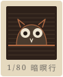

Capricho nocturno Nº 1 / 8
領角鴞
Otus lettia
- 季節
- 全年；3–5 月求偶最吵
- 在哪
- 樟湖步道 0.4K 相思林
「咕——」一聲，隔十幾秒再一聲。牠的耳羽豎起來時是在警戒，不是在生氣。我們只停兩分鐘，手電筒照腳下、不照眼睛。
黃秋霖 2003・Nº 12 · 原版畫 30 張
ocho pares de ojos
這八張是「暗暝八十景」裡被借最多次的版。每一張的夜空都是松香飛塵咬出來的網，亮的地方是在進酸槽之前用停蝕漆蓋住的——酸咬不到，就是光。把滑鼠在頁面上繞一圈，或者把手機斜過來：每張紙四邊被壓下去的那一圈版痕，會跟著光轉。
Otus lettia
「咕——」一聲，隔十幾秒再一聲。牠的耳羽豎起來時是在警戒，不是在生氣。我們只停兩分鐘，手電筒照腳下、不照眼睛。
黃秋霖 2003・Nº 12 · 原版畫 30 張Hipposideros armiger terasensis
日落後二十分鐘左右出洞，一隻接一隻。鼻子上那片葉子是聲納的喇叭。洞口三公尺內不准開任何燈。
黃秋霖 2008・Nº 21 · 原版畫 30 張Petaurista philippensis
牠從樹頂往下滑五六十公尺，最後一秒把尾巴往上一甩，停在另一棵樹的同一個高度。眼睛反光是橘紅色的。
黃秋霖 1998・Nº 3 · 原版畫 30 張Paguma larvata taivana
從額頭到鼻尖一道白。牠吃果子也吃蟲，聽到人聲會停在枝上不動——你以為牠沒看見你。
黃秋霖 2011・Nº 28 · 原版畫 30 張Zhangixalus moltrechti
臺灣特有種。綠背、大腿內側橘紅帶黑斑，叫聲「咯—咯咯」。蓄水池邊請走在步道上，蝌蚪在泥裡。
黃以晴 2015・Nº 33 · 原版畫 30 張Abscondita cerata
每年只有四個星期。這一段整隊關燈走，領隊用紅光照地面。這一張的白點全是停蝕漆點出來的：酸咬不到的地方，就是光。
黃秋霖 2001・Nº 9 · 原版畫 30 張Dorcus titanus sika
雄蟲的大顎像兩把彎刀。我們看，不抓；牠們一個晚上會回同一道樹汁好幾次。
黃以晴 2019・Nº 39 · 原版畫 30 張Protobothrops mucrosquamatus
三角頭、背上一排深褐色的龜殼紋。看到就停、退三步、告訴領隊，讓牠先走。每一場夜觀我們都帶著蛇咬急救卡與最近的醫院路線。
黃秋霖 2006・Nº 17 · 原版畫 30 張看到牠們的時候：紅光、不閃光、不碰、不餵、退一步。 · 夜觀須知 →